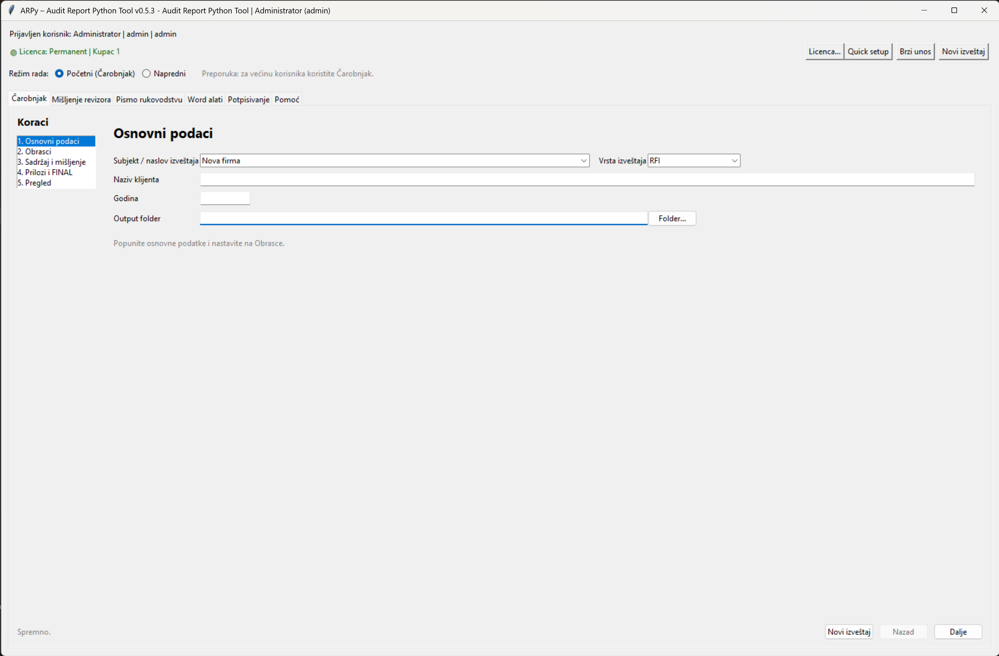

ARPy
Audit Report Python Tool
Automatizuj pripremu revizorskih izveštaja — od Word/PDF dokumenata do finalnog profesionalnog PDF-a sa memorandumom, potpisima i pravilnim redosledom.
Zatraži demoŠta ARPy rešava
📄 Spajanje Word i PDF dokumenata
🏢 Automatski memorandum
✍️ Potpis i pečat
📑 Finalni PDF
🧩 Profili izveštaja
⚡ Ušteda vremena
Režimi rada
ARPy nudi dva režima rada: Čarobnjak za brz i jednostavan workflow, i Napredni režim za potpunu kontrolu nad dokumentima, prilozima i PDF obradom.

Početni režim (Čarobnjak)

Napredni režim
Tipičan workflow
- Unos osnovnih podataka
- Dodavanje dokumenata (Mišljenje, Obrasci, Prilozi)
- Automatska priprema
- Memorandum + potpis
- Finalni PDF izveštaj
Zašto ARPy
Umesto ručnog rada u Word/Acrobat okruženju, ARPy automatizuje ceo proces i smanjuje mogućnost greške.
Kontakt
Za demo ili više informacija:
aleksica@gmail.com